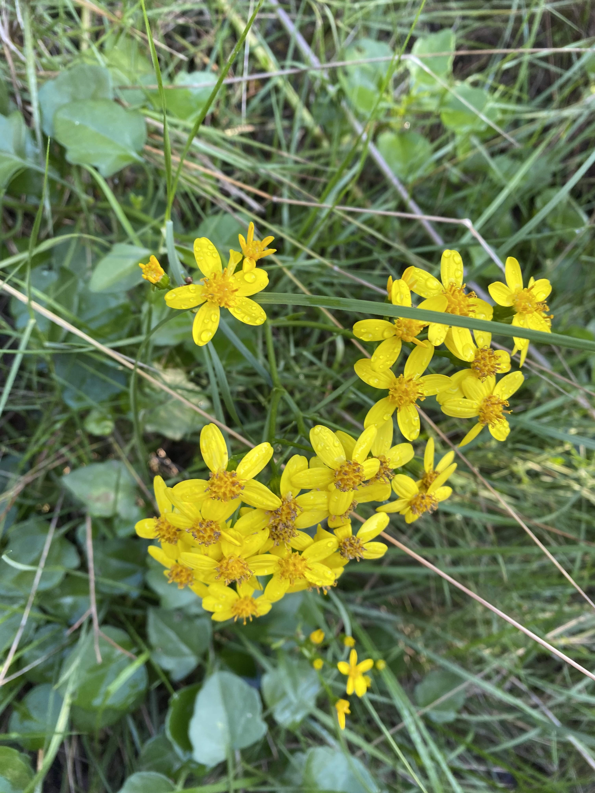
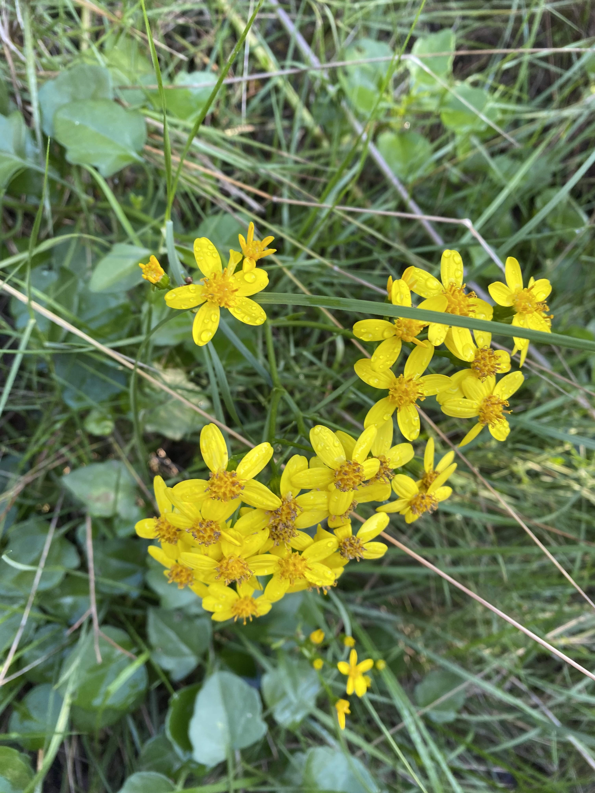

Agriculture Zero
Course Details
Name: Agriculture Zero
Dates: 03 December to 05 December 2024
Faculty: Jonathan Minchin
Visiting Farms
On our first day, we had an introduction to farming practices and approaches. Then after the lecture, we went for a walk to look at two different local farms within a few blocks of IAAC. It was a gorgeous day and nice to get outside and although we didn't spend much time in the dirt, it was nice to spend the time surrounded by plants.


Visit Valldaura
The following day, we went on a trip up to Valldaura Labs. We walked up from the metro and had class along the way. We were tasked with using iNaturalist along the walk up the mountain to identify plants we found interesting. The discussions with Jonathan on the walk up were interesting.
It was fun to very briefly be on the Camino de Santiago. For more about my previous experience on a very different part of the Camino, check out my blog posts about it.

Some of the photos I collected on the walk are below.

 



Once we arrived at Valldaura, we got a tour of the greenhouse and the gardens. While we didn't have much time, we did do a little bit of weeding in the garden to get our hands dirty before heading back down the mountain to get lunch.
International Soil Day
On our final day of class, we celebrated International Soil Day by learning about different farming methods, soils, and conservation projects.
Jonathan introduced us to some website resources that I am excited to check out more: Appropedia and Practical Action.
Hack a Farm
The project for this course was to choose a farm, or type of farm, and figure out how to 'hack' it. Improve it in some way. The suggestion was to 'make it hard for yourself by making it easy for the plants'. In our group, Maria Vittoria, Auxence, and I chose a specific food garden that our group member, has a personal connection to.
We started by asking Vitti's friend, Cristina, about the challenges she has with her garden and what methods of farming she uses. Through this discussion we learned that Cristina uses a permaculture technique where she does not till the soil to promote nutrient conservation. Some of the challenges she has include snails, insect pests, water scarcity, and downy mildew on the tomato plants.
We initially were thinking of making suggestions about pair cropping for the tomatoes and using some prediction algorithms to determine when pests might be around. We researched potential suggestions but realized that our brief researched knowledge would be insignificant compared to Cristina's hands-on knowledge of her own garden. It felt disingenuous to make suggestions to a gardener about how she "should" be doing things as people with no hands-on knowledge of her garden.
Through discussions with Jonathan, we decided to focus on the idea of community knowledge and resource sharing instead. This way farmers could talk and work directly with other farmers in their local region to share information of what is working, what challenges they are having, and potentially to share resources such as soil, seeds, or plants as well.

Project Proposal
We imagined an app that would allow farmers to get hyper-local feedback and advice from other farmers in their region as well as share resources.
The idea would be to incorporate various filters to make the app as simple as possible. Jonathan told us that many farmers he has worked with use audio messages more than typing because of dirt on their hands and the convenience of stream-of-consciousness note taking. This highlighted the need for ease of use within our proposed app.
The app would include a chat feature for asking for advice and sharing information as well as a marketplace which would allow people to offer items they were willing to part with or to request things they needed. The app would include options of purchase like a traditional monetary exchange, exchange of goods, exchange of labor or advice, or any other user-filled option. Additionally, there would be options for delivery method such as pick-up only or delivery.
The idea for this app would be to increase communication and collaboration between farmers, from family gardeners to industrial farmers, to plant novices to experts and to promote a culture of resource sharing.
As Vitti said
Another important aspect we considered is the idea of knowledge transport: finding ways to preserve and share the valuable expertise of farmers. These insights, accumulated through experience and rooted in tradition, hold immense value. By creating a tool that fosters the exchange of this expertise, we aim to empower small-scale farmers and build a stronger, more connected agricultural community